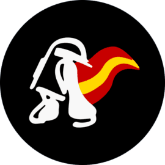
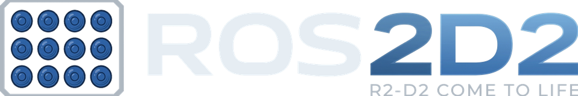

Foot
Dome
Favourites
All actions · hold one to make it a favourite
A mode starts as with the controller: pressing its combination. Touching a stick or STOP switches it off.


Another device is driving R2. This phone takes over when it has been quiet for a second.
A mode starts as with the controller: pressing its combination. Touching a stick or STOP switches it off.